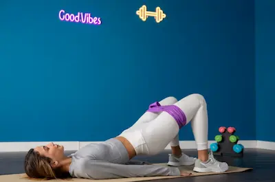

Entrenamiento de Glúteos Sin Pesas (Resultados en 4 Semanas)
Importancia de fortalecer los glúteos
Los glúteos no son solo uno de los músculos más grandes y potentes del cuerpo, sino también uno de los más importantes para el movimiento, la postura y la salud general de la zona lumbar y de las piernas. Unos glúteos fuertes ayudan a estabilizar la pelvis y proporcionan una base sólida para todos los movimientos que realizamos a diario, desde caminar hasta levantar peso o correr. Muchas personas subestiman el papel de esta zona muscular y se centran únicamente en su aspecto estético, pero en realidad, la falta de fuerza en los glúteos puede generar desbalances musculares que afectan a la espalda baja, las rodillas y las caderas, incrementando el riesgo de lesiones. Entrenar esta área no solo mejora la apariencia física, sino que también optimiza el rendimiento deportivo y contribuye a una mejor calidad de vida.
Otro punto clave es que los glúteos, al ser músculos grandes, tienen un gran impacto en el gasto calórico total del día. Esto significa que, al trabajar esta zona, no solo tonificamos y mejoramos la forma, sino que también potenciamos el metabolismo, lo que ayuda en la pérdida o mantenimiento de peso. Además, a diferencia de lo que muchos piensan, no es necesario contar con pesas para fortalecerlos de forma efectiva. El propio peso corporal, junto con bandas elásticas, es suficiente para generar una resistencia adecuada que provoque adaptaciones musculares positivas. Con un plan bien estructurado, es posible ver cambios significativos en fuerza, tono y volumen en tan solo cuatro semanas, siempre que se combine con una alimentación equilibrada y descanso suficiente.
Ejercicios clave para resultados rápidos
La efectividad del entrenamiento de glúteos radica en seleccionar ejercicios que activen las fibras musculares en diferentes planos de movimiento. Movimientos como el puente de glúteos (glute bridge), las patadas de burro, las elevaciones laterales y las sentadillas con banda de resistencia son fundamentales porque trabajan de forma conjunta el glúteo mayor, medio y menor. Esto no solo da un aspecto más redondeado y firme, sino que también mejora la estabilidad de las caderas y la coordinación del tren inferior. Para maximizar los resultados, es recomendable realizar cada ejercicio de forma controlada, enfocándose en la contracción máxima durante la fase final del movimiento y evitando el impulso que reduce la tensión en el músculo.
Un punto importante es la frecuencia y el volumen de trabajo. Entrenar los glúteos entre tres y cuatro veces por semana, con un rango de 3 a 4 series por ejercicio y entre 12 y 20 repeticiones, puede ser suficiente para ver mejoras rápidas. Además, el uso de bandas elásticas incrementa la tensión constante durante todo el movimiento, lo que favorece una mayor activación muscular. No es necesario realizar sesiones interminables; con 20 a 30 minutos de entrenamiento bien planificado, el progreso puede ser notable en menos de un mes, siempre que se preste atención a la técnica y se evite realizar los movimientos de forma apresurada.
Rutina semanal sugerida
Un programa semanal bien diseñado debe combinar ejercicios de activación, fuerza y potencia. Por ejemplo, el primer día podría estar dedicado a movimientos de activación y fuerza con bandas, como sentadillas abiertas con banda, puentes de glúteos y elevaciones laterales. El segundo día podría enfocarse en ejercicios más intensos, como desplantes laterales, patadas de burro con banda y sentadillas búlgaras, que además de trabajar los glúteos, fortalecen los músculos estabilizadores. El tercer día se podría emplear para ejercicios más dinámicos, como saltos con banda o hip thrusts, que combinan fuerza y explosividad.
Este enfoque progresivo no solo ayuda a tonificar y desarrollar la musculatura, sino que también previene el estancamiento y mantiene el entrenamiento estimulante. Al alternar intensidad y tipos de ejercicios, los músculos reciben un estímulo constante, lo que favorece la adaptación y el crecimiento. Además, al no entrenar todos los días la misma zona, se da tiempo a las fibras musculares para repararse y fortalecerse, lo que es clave para evitar lesiones y mejorar el rendimiento a largo plazo.
Alimentación y descanso para mejores resultados
Sin una alimentación adecuada, el progreso del entrenamiento puede verse limitado. Para favorecer el desarrollo muscular, es fundamental asegurar un consumo suficiente de proteínas, que son los bloques de construcción del músculo. También se deben incluir carbohidratos complejos para proporcionar energía durante las sesiones de entrenamiento, y grasas saludables que contribuyan a la producción hormonal y a la salud general. Beber suficiente agua es igualmente importante para mantener la función muscular y prevenir calambres o fatiga prematura.
El descanso, por otro lado, es un componente que muchos pasan por alto pero que es vital para ver resultados. Durante el sueño, el cuerpo libera hormonas anabólicas que favorecen la reparación y el crecimiento muscular. Dormir entre 7 y 9 horas por noche y respetar los días de recuperación es esencial para permitir que los glúteos se fortalezcan. La combinación de entrenamiento constante, nutrición adecuada y descanso suficiente es la fórmula perfecta para conseguir glúteos más firmes y fuertes en apenas un mes.